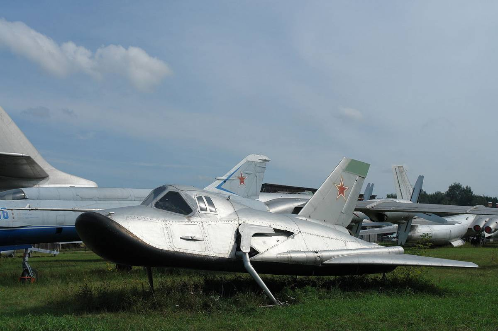
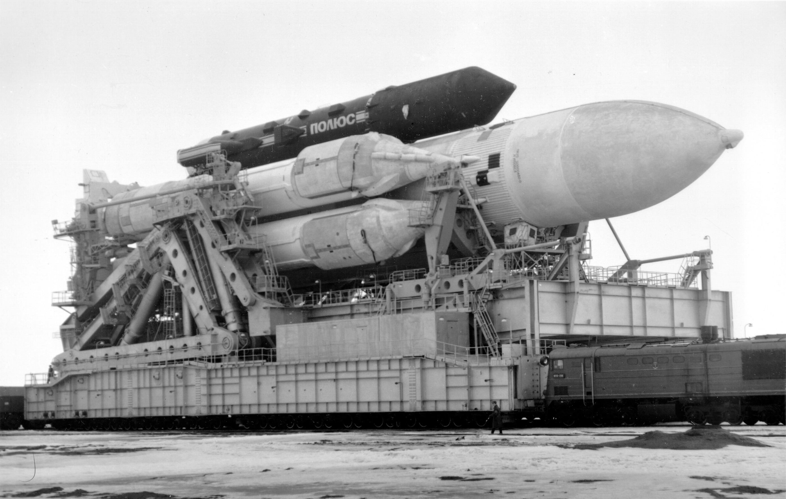

Космические проекты: смерть до рождения
-

Космические истребители
Dyna Soar и «Спираль» можно считать одними из самых невероятных космических проектов всех времен: ничего подобного не было ни до, ни после.
Подробнее -

Лазерная установка «Скиф»
Стоимость программы «Скиф» доподлинно неизвестна, но она часто фигурирует в числе самых дорогих космических проектов СССР.
Подробнее